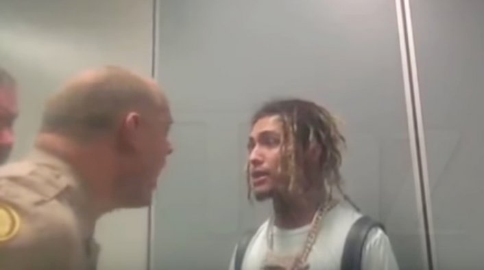
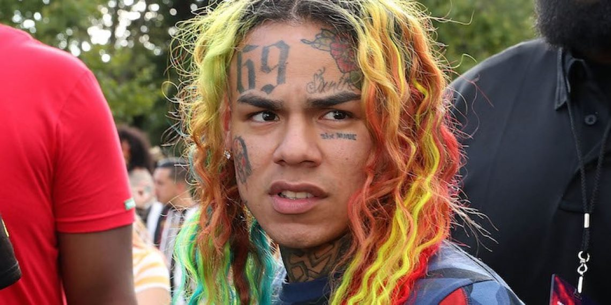
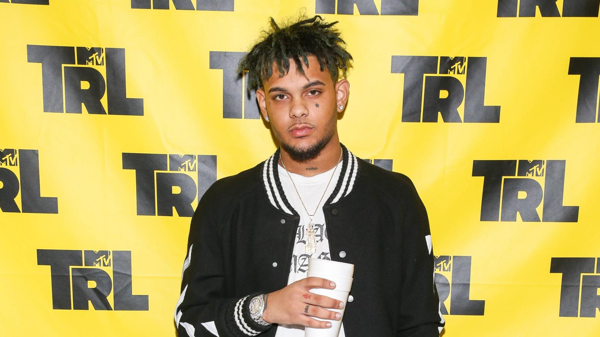

Novas imagens sobre a disputa de Lil Pump com a polícia do aeroporto

O rapper Lil Pump teve alguns desentendimentos com a lei em 2018, mas o mais notável foi o
confronto com as autoridades aeroportuárias.
Em dezembro, o rapper foi preso em um aeroporto de Miami depois que um encarregado de bagagens alegou que a bolsa cheirava a maconha.
Eles alegaram que pertencia a Pump, que negou que a bolsa fosse dele. Ele estava dizendo a verdade, mas essa conclusão só veio depois
que ele entrou em um confronto acirrado com a polícia de Miami.
Rapper dinamarquês está processando 6ix9ine após gravar música com o artista

De acordo com o TMZ , um rapper dinamarquês chamado Sleiman está indo atrás de 6ix9ine depois
que ele foi impedido de lançar sua colaboração. Sleiman afirma que ele colaborou com Tekashi 6ix9ine
em uma música chamada “Red Bandnna [sic] / Black Hoodie”. O artista dinamarquês disse que ele e 6ix9ine
fizeram um acordo em que Tekashi assinaria os direitos da música por 88.000 euros – quase US $ 100.000.
Smokepurpp lança EP “Lost Planet” com Gunna, Lil Pump e mais

Smokepurpp está programado para se apresentar Coachella novamente neste fim de semana. Antes de
sua performance, o rapper de 21 anos fornece aos fãs novas músicas sob a forma de seu EP Lost Planet.
O último projeto do artista da Alamo Records é composto por oito músicas. O EP inclui colaborações com Gunna,
NLE Choppa e com o membro da Gucci Gang, Lil Pump.